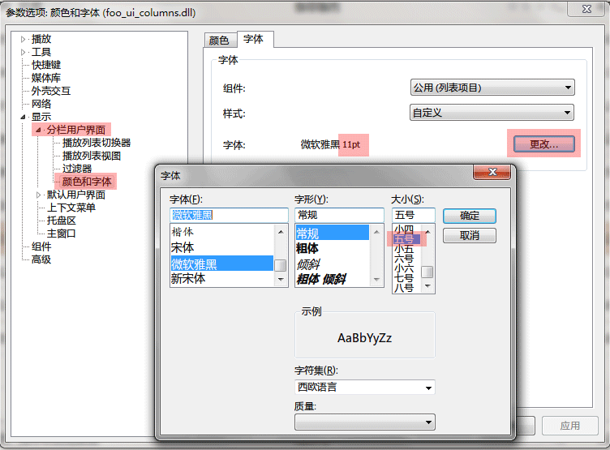
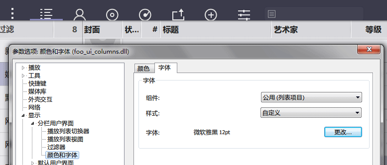
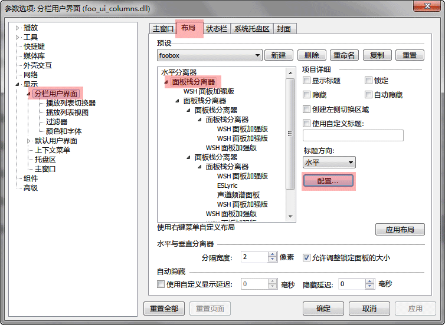
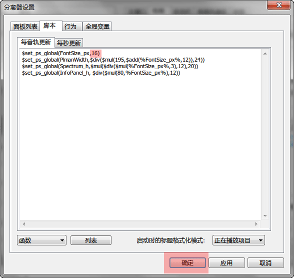
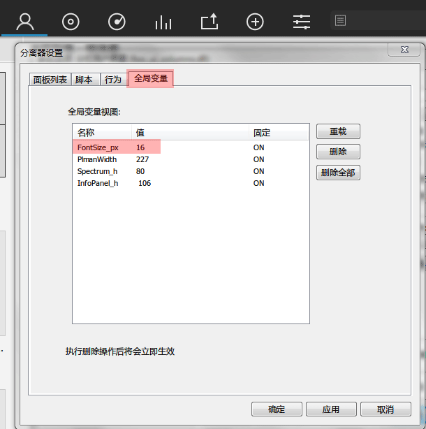

高分屏适配指南
Foobox 5.9 以上的版本都可以适应不同 dpi 的屏幕，方法为只要改变字体的大小，界面的元素大小都会相应变化，可是这个变化受限于 CUI 和 Panel Stack Splitter (PSS) 组合的功能影响，并不能完全自动化，由 PSS 控制的面板的大小需要手动改变预设的一个参数 (pss 的一个全局变量，该变量用于面板尺寸计算) 来实现。下面就是改变这个参数的具体图文操作方法。
首先你要知道这个参数代表的是你所用到的界面字体的大小， 单位是像素 px, 而通常我们选字体会用到的是 pt (磅)，字号 （如五号，小四等），所以我们需要知道字号，pt 和 px 的关系。
| pt (point，磅)： | 一个物理长度单位，指的是72分之一英寸。Windows 里的对话框字号选取单位缺省的话一般就是 pt |
| px (pixel，像素)： | 一个虚拟长度单位，是计算机系统的数字化图像长度单位，如果 px 要换算成物理长度，需要指定精度 DPI (Dots Per Inch，每英寸像素数)，在扫描打印时一般都有 DPI 可选。Windows 系统默认是96dpi，Apple 系统默认是72dpi。 |
| 字号： | 是中文字库中特有的一种单位，以中文代号表示特定的磅值 pt，便于记忆、表述。 |
pt 和 px 的换算公式可以根据 pt 的定义得出:
pt = px * 72 / dpi
如果 Windows 里定义了缩放比例大于100%的话(zoom 值，高分屏通常设定为150%, 200%等等），DPI 就不是96了，这个计算公式还要算上 zoom 值
pt = (px * 72 / 96) / zoom = (px * 3 / 4) / zoom
px = (pt * 96 / 72) * zoom = (pt * 4 / 3) * zoom
其对应关系可由下表查得，我们是要从 pt 值得到相应的 px 值，如果你的放大比率为其他值，请按上面的公式算出，四舍五入取整数，注意，px只能取整数，小数无效。
| 字号 | pt | px (DPI 96) zoom=100% |
px zoom=125% |
px zoom=150% |
px zoom=200% |
|---|---|---|---|---|---|
| 初号 | 42 | 56 | 70 | 84 | 112 |
| 小初 | 36 | 48 | 60 | 72 | 96 |
| 34 | 45 | 57 | 68 | 91 | |
| 32 | 42 | 53 | 64 | 85 | |
| 30 | 40 | 50 | 60 | 80 | |
| 29 | 38 | 48 | 58 | 77 | |
| 28 | 37 | 47 | 56 | 75 | |
| 27 | 36 | 45 | 54 | 72 | |
| 一号 | 26 | 35 | 43 | 52 | 69 |
| 25 | 34 | 42 | 50 | 67 | |
| 小一 | 24 | 32 | 40 | 48 | 64 |
| 二号 | 22 | 29 | 37 | 44 | 59 |
| 20 | 26 | 33 | 40 | 53 | |
| 小二 | 18 | 24 | 30 | 36 | 48 |
| 17 | 23 | 28 | 34 | 45 | |
| 三号 | 16 | 22 | 27 | 32 | 43 |
| 小三 | 15 | 21 | 25 | 30 | 40 |
| 14.5 | 20 | 24 | 29 | 39 | |
| 四号 | 14 | 19 | 23 | 28 | 37 |
| 13.5 | 18 | 23 | 27 | 36 | |
| 13 | 17 | 22 | 26 | 35 | |
| 小四 | 12 | 16 | 20 | 24 | 32 |
| 11 | 15 | 19 | 22 | 29 | |
| 五号 | 10.5 | 14 | 18 | 21 | 28 |
| 10 | 13 | 17 | 20 | 27 | |
| 小五 | 9 | 12 | 15 | 18 | 24 |
| 8 | 11 | 14 | 16 | 21 | |
| 六号 | 7.5 | 10 | 13 | 15 | 20 |
| 7 | 9 | 12 | 14 | 19 | |
| 小六 | 6.5 | 8 | 11 | 13 | 17 |
| 七号 | 5.5 | 7 | 9 | 11 | 15 |
| 八号 | 5 | 6 | 8 | 10 | 13 |
下面我们就以把 10.5pt (五号, 14px) 的字体改为 12pt 为例 (zoom=100%)：由表查出 px 值为16。
1) 打开 foobar2000 的参数选项对话框，如图定位到 CUI 的字体选择页面更改字体，注意：这里显示的字体大小不能准确到小数，比如图里五号字应该是 10.5pt，而不是 11pt，注意一下以免查表出偏差。
2) 改为 12pt 后页面元素都变大了，但是面板高度如顶栏，底栏的大小没有变，所以还要继续...
3) 如图，进入 CUI 布局编辑对话框，选取第一个面板栈分离器，点击配置...按钮。
3) 在分离器设置对话框脚本页面，把第一个变量的 FontSize_px 改成 12pt 对应的 px 值 16，然后点一路确定返回 foobar2000 界面。
4) 如果成功，可以看到顶栏底栏等面板尺寸会变大了匹配界面元素，如果没有变化则变量加载没有成功，你可以返回刚才的分离器 设置对话框的全局变量页面查看变量值是否变成了16，如果没有则再一路点击确定一次，那个全部删除按钮也可以点击，确定后变量会重新加载。
---The End---